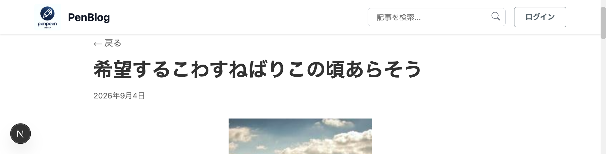
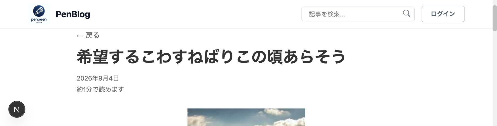

記事詳細に読了時間を表示
記事詳細の投稿日の下に「約1分で読めます」の形で読了時間を出す。
この PR は #170（
feat/reading-time-calc）の上に積んでいる。
#170 が入るまでは、差分に読了時間の計算関数 calculateReadingMinutes も含まれて見える。
キャプチャはローカルの Rails API（rails_blog）と Next.js を繋いで撮った実データの画面で、記事は /posts/100。
1. この PR で何をしたか
記事詳細ページのヘッダーで、投稿日の直後に「約N分で読めます」を表示する。
N は本文から calculateReadingMinutes で求める（1 分あたり 500 文字、端数は切り上げ、最小 1 分）。
2. 背景と目的
記事を開く前に読む時間の見当を付けられるようにする。 計算（#170）と表示（この PR）は別の PR に分け、表示側を積み上げの PR にした。
3. 画面の変化
記事詳細ページのヘッダー部分。同じ記事、同じ画面サイズ、同じスクロール位置で撮っている。 この記事は本文が短いため「約1分」になる。


4. 変更の全体像
| ファイル | 変更内容 |
|---|---|
PostContent/index.tsx |
ヘッダーの FormattedDate の直後に読了時間の p を追加 |
PostContent/PostContent.module.css |
.readingTime を追加 |
PostContent/PostContent.test.tsx |
本文 1200 文字で「約3分」、短い本文で「約1分」のテストを追加 |
5. ファイルごとの説明
index.tsx
post.content を calculateReadingMinutes に渡し、結果を文言に埋めている。
投稿日と同じヘッダーのメタ情報として並べるため、位置は FormattedDate の直後にした。
<FormattedDate date={post.createdAt} />
<p className={styles.readingTime}>
約{calculateReadingMinutes(post.content)}分で読めます
</p>PostContent.module.css
投稿日より控えめに見せるため、文字色 #666、サイズ 0.9rem、上余白 0.25rem にした。
PostContent.test.tsx
「あ」を 1200 個並べた本文で「約3分で読めます」が出ること、既存の mockPost（本文「テスト内容」）で
「約1分で読めます」が出ることを見る。
6. レビューで見てほしい点
- 文言を「約N分で読めます」にした点。「N min read」の英語表記は採らなかった。
- 位置を本文の直前でなく、投稿日の直後にした点。投稿日とまとめてメタ情報として読ませるため。
- 読了時間は本文
post.contentの文字数だけで決まり、サムネイルやコメントは含まない。
7. 検証したこと
| 確認したこと | 結果 |
|---|---|
npm test（全体） | 43 suites / 261 件すべて PASS |
npm run lint | エラーなし |
npx tsc --noEmit | 既存の 12 件のみ。変更したファイルに新規エラーなし |
実データの画面（/posts/100） | 投稿日の下に「約1分で読めます」が出る。コンソールのエラーと失敗したリクエストは 0 件 |